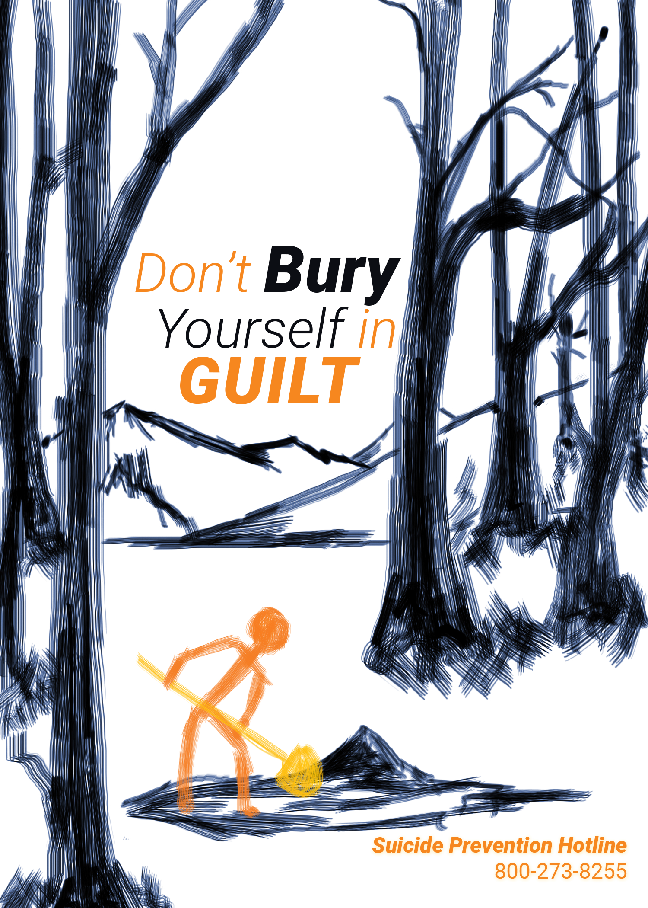

CAUSES
There are so many causes that can lead someone to do suicide. With so many reasons, it is quite common for one habit to lead to another bad habit. With that in mind, it is important for others to reach out as soon as possible because circumstances can escalate. It is also important to realize that so many of the causes are just there regardless of what choices a person makes. Many of these include some type of illness.
Physical or Mental Health Causes
- Mental illness
- People with illnesses that cause suffering- ie chronic pain
Social Causes
The causes below are categorized as being social because they are mostly related to human interaction. Obviously, these causes only come from being in a society.
- Trauma
- Post-traumatic Stress Disorder (PSTD)
- PTSD often leads to depression because of the feelings of hopelessness that comes from trauma.
- Social pressure
- Depression
- drugs/alcohol
- Addiction
- Failure
- Financial problems
- Academic
- Bullying
- Not being accepted
- Hopelessness
- Feeling of worthlessness/being a burden
- Isolation can lead to other things such as:
- Substance abuse
- Social anxiety
- Separation: divorce or losing relationships
Accidental
The causes below can be accidental, but can also be intentional.
- Firearm
- Overdose
- Poison
Suicide Prevention Posters
